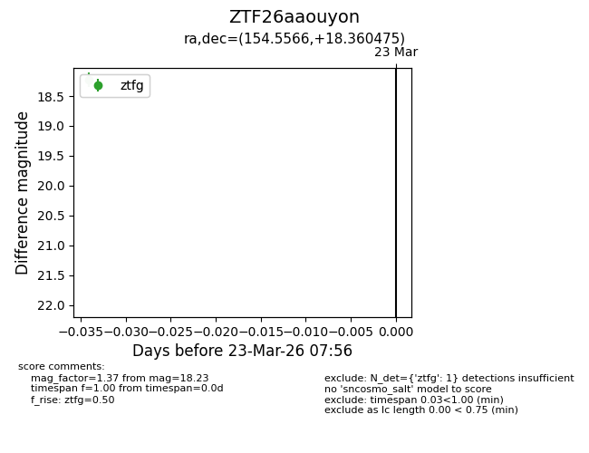
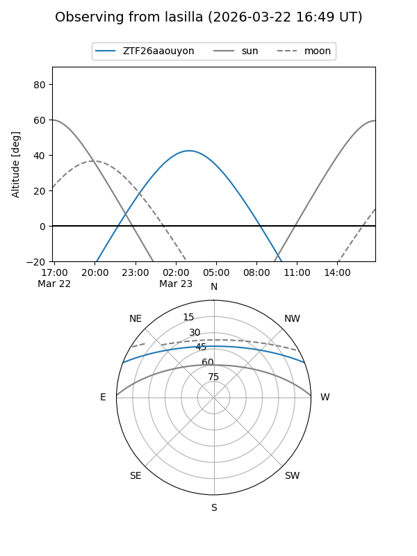
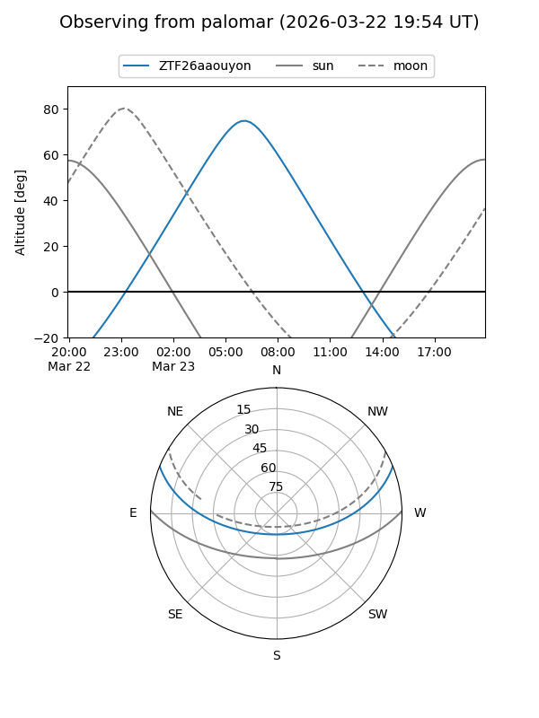

ZTF26aaouyon
Target ZTF26aaouyon at 2026-03-23 07:58
Aliases and brokers:
FINK: link
Lasair: link
ALeRCE: link
alt names
ZTF26aaouyon (ztf,fink_ztf)
Coordinates:
equatorial (ra, dec) = 154.5566,+18.36047
equatorial (HMS+DMS) = 10:18:13.58,+18:21:37.71
galactic (l, b) = (218.6857,+53.75464)
Flags:
Photometry:
last ztfg=18.23
1 ztfg detections
Lightcurve

Visibility


Additional plots